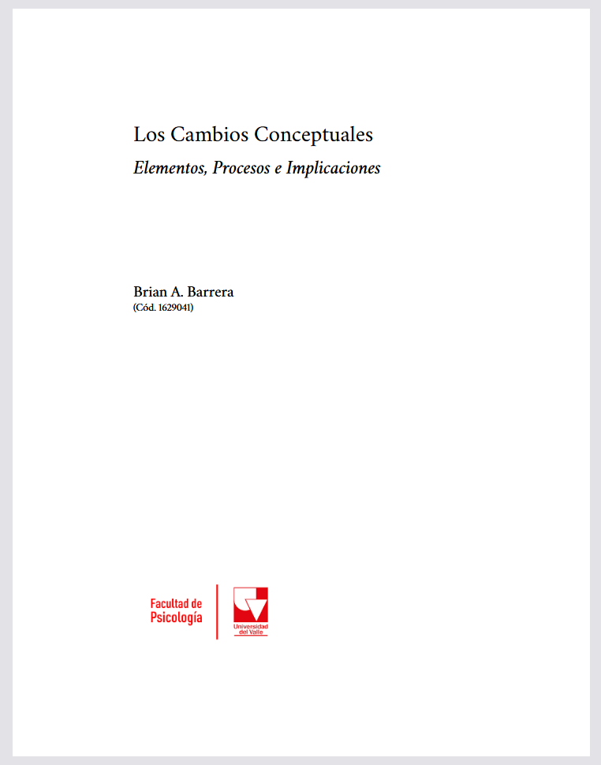
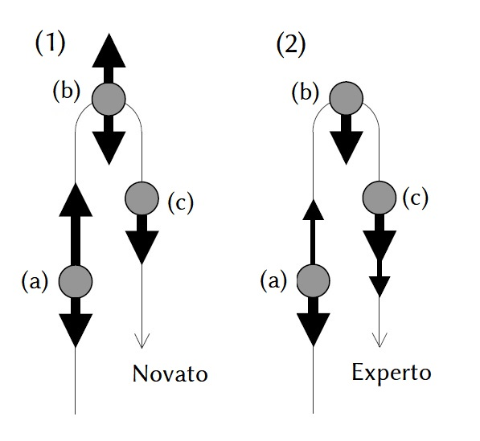

Los cambios conceptuales
Elementos, procesos e implicaciones
No hay nada más práctico que una buena teoría

Presentación
¿Cuál es el tema de esta monografía?
La presente monografía es una revisión de las investigaciones que se han llevado a cabo en psicología sobre el cambio conceptual. Antes de avanzar, sería útil tener en mente alguna noción provisional y amplia del tema, pero la pluralidad de perspectivas en debate hacen casi imposible comenzar con una definición ecuménica. En esos casos, las ideas pre-teóricas son una buena estrategia heurística. Aportan una concepción general o poco comprometedora que son la materia prima para las investigaciones ulteriores. En lo que concierne al cambio conceptual, las interpretaciones sobre la física del lanzamiento de una objeto (p. ej. una pelota) son un escenario conveniente para una caracterización prima facie que sirva de punto de partida. Obsérvense los diagramas de la Figura 1 que aparecen a continuación. En la posición (a), la pelota asciende justo después de dejar la mano que la lanzó, mientras que en la posición (b) se detiene por un breve instante para luego, como aparece en la posición (c) descender hasta regresar a la mano -o impactar la superficie más cercana. Las flechas hacia arriba o abajo son vectores trazados por novatos (izquierda, diagrama 1) y expertos (derecha, diagrama 2).

Por un lado, los novatos (estudiantes universitarios de física en primer año) suelen dibujar dos vectores en las partes a y b de la trayectoria -a veces también dibujan una delgada línea hacia arriba en c. En sus representaciones, primero habría una fuerza impartida por la mano del lanzador, que apunta hacia arriba, y que supera a la atracción de la gravedad. Esta fuerza seguiría empujando la pelota hacia arriba, hasta que eventualmente sea diezmada por la resistencia del aire y la gravedad. Después, mientras desciende, la gravedad superaría la fuerza impartida por el tiro inicial. Por otro lado, los expertos (estudiantes avanzados o profesionales) trazan otros vectores: en sus representaciones, la única fuerza que ejerce su efecto en todo el recorrido es la gravedad. Lo demás son velocidades que disminuyen (flecha ascendente en a) o aumentan (flecha descendente en c) debido a esa única fuerza. Puesto que todos los expertos fueron novatos, la cuestión es “¿qué ocurre en medio?” A manera de definición ostensiva, puede decirse que el cambio conceptual es el proceso mediante el cual los novatos se convierten en expertos (otras definiciones en la sección de Antecedentes). Las investigaciones resumidas en esta monografía dan cuenta de los detalles de ese proceso.
¿Para qué una monografía sobre cambio conceptual?
En otras palabras, el objetivo general de esta monografía es sintetizar las investigaciones que se han llevado a cabo en psicología acerca del cambio conceptual. Como objetivos específicos, la labor de síntesis se propone a) rastrear tendencias teóricas y metodológicas en la historia de los estudios respecto al cambio conceptual; b) explicar las principales conceptualizaciones, modelos o teorías, formuladas en psicología, referentes al cambio conceptual; y c) presentar las críticas más notorias a las posturas de mayor influencia en la investigación sobre cambio conceptual, así como las preguntas abiertas concernientes a este proceso. Mediante tales objetivos se pretende realizar un análisis temático del campo investigación, en el que se identifiquen los consensos y los problemas abiertos en las diferentes respuestas a las cuestiones centrales. Algunas de esas preguntas fundamentales son, por ejemplo, “¿cuál es la naturaleza de los preconceptos [o ideas previas] que tienen los educandos? ¿qué mecanismos producen el cambio conceptual? ¿qué hace que el cambio conceptual resulte difícil? ¿qué podemos hacer para fomentar el cambio conceptual?”Wolfgang Schnotz, Stella Vosniadou, Mario Carretero, eds. New perspectives on conceptual change (New York : Pergamon, ).. En la literatura de investigación disponible actualmente, se encuentran cientos de respuestas -a menudo contradictorias entre sí- y muchos interrogantes nuevos en la periferia. Se ha procurado que el orden y los contenidos de la monografía den cuenta de las propuestas que sobresalen.
¿Por qué un trabajo como éste?
Hay al menos dos motivos por los cuales esta monografía sería pertinente y tendría algún interés. La primera justificación es exclusivamente académica, y parte del hecho de que el campo de investigación se encuentra en un penoso estado de fragmentación. Después de casi cuatro décadas desde que se publicaron los primeros artículos sobre el tema, aunque se han publicado dos manuales internacionales sobre el cambio conceptual, entre los investigadores de este ámbito sigue habiendo poco consenso sobre el significado del cambio conceptual … [pues] tienden a identificar el significado … desde diferentes enfoques basados en sus intereses específicos de investigación
.Tzung-Jin Lin et al., Research trends in science education from 2013 to 2017: a systematic content analysis of publications in selected journals
, International Journal of Science Education 12, no. 9 (): 2619. En una reseña de la primera edición del International Handbook of Research on Conceptual Change, se escribió que este manual no ofrece una descripción coherente del campo de investigación, lo que refleja que se están llevando cabo varios debates importantes, pero que no parecen alcanzar consensos.Keith S. Taber, Understanding the Nature and Processes of Conceptual Change: An Essay Review
, Education Review 14, no. 1 (): 12. Cualquier otro libro especializado en el tema exhibe el mismo mapa: un terreno de investigación con prominentes líneas de falla.
Ahora bien, la necesidad de consensos no justifica por sí misma el formato específico de esta monografía. También hay un buen motivo para presentar esta investigación en la forma narrativa, cualitativa o teórica/conceptual en la que se ha decidido elaborarla. La razón más importante estriba en las limitaciones reportadas por otros documentos de literatura secundaria, en especial por las revisiones de orientación cuantitativa, tal como el meta-análisis de Murphy y AlexanderP. Karen Murphy y Patricia A. Alexander, The Role of Knowledge, Beliefs, and Interest in the Conceptual Change Process: A Synthesis and Meta-Analysis of the Research
, en International Handbook of Research on Conceptual Change, 1a ed., ed. Stella Vosniadou (Routledge, ). y el inventario exhaustivo de modelos por un equipo internacional de investigadores encabezados por Potvin.Patrice Potvin et al., Models of conceptual change in science learning: establishing an exhaustive inventory based on support given by articles published in major journals
, Studies in Science Education 56, no. 2 (2020): 157–211. Para los análisis de Murphy y Alexander el mayor desafío era la falta claridad conceptual, la cual amenazaba la validez de las relaciones entre los diferentes tamaños de efecto en los artículos incluidos. En el proceso de codificación se encontraron con que uno de los términos más centrales y omnipresentes dentro de la literatura sobre el cambio conceptual rara vez se definía explícitamente y sólo con poca frecuencia se definía implícitamente. Ese término es el de concepto
.Murphy y Alexander, The Role of Knowledge, Beliefs, and Interest
, 598. La noción misma de lo que cambia era difícilmente medible. Para calcular los tamaños de los efectos, las investigadoras optaron por clasificar según cualquiera que fuera la etiqueta que los investigadores utilizaran para los conocimientos o creencias que estudiaban, aunque hubiera ambigüedad y traslapes en esas etiquetas
.Murphy y Alexander, The Role of Knowledge, Beliefs, and Interest
, 605.
El estudio de Potvin et al. se enfrentó a un problema relativamente distinto. El objetivo de su trabajo era registrar un inventario exhaustivo de los modelos de cambio conceptual y analizar el apoyo empírico (en la forma de soportes o de refutaciones) para cada uno. Por exhaustivo
entiéndase desde que existe el campo de investigación
. Aunque solo se usaron artículos en cinco de las revistas de mejor clasificación,Específicamente: Research in Science Education (Springer Nature); Learning and Instruction (Elsevier); International Journal of Science Education (Taylor & Francis); Journal of Research in Science Teaching, y Science Education (John Wiley & Sons). en total se inventariaron 86 modelos de cambio conceptual. La adecuada medición del soporte empírico a los modelos estaba limitada por el hecho de que ciertas ideas fundamentales para el campo … suelen ser compartidas por más de un modelo
de cambio conceptual. En efecto, casi todo el apoyo empírico se distribuía entre solo seis o siete modelos. Los investigadores invitaron a trabajar en estos obstáculos conceptuales. Para mejorar futuras aproximaciones cuantitativas a la revisión de la literatura, es necesario un mayor esfuerzo para encontrar las constantes que existen en estos modelos. Al fin y al cabo, ¿qué pensaría alguien de un campo, digamos, como la física, si se propusieran simultáneamente ochenta y seis modelos acerca del movimiento, sin ofrecer posibilidades claras de discriminar entre ellos?
.Potvin et al., Models of conceptual change
, 187–189.
En otra de las últimas revisiones (esta vez narrativa) del estado de la investigación sobre cambio conceptual se hace el mismo llamado. En la síntesis -de síntesis- elaborada por Amin y Levrini, se afirmó que las diferentes líneas de investigación sobre cambio conceptual parecen agruparse vagamente en clústeres que son semejantes en sus enfoques generales y estilos de teorización
,Tamer G. Amin y Olivia Levrini, Facing the challenge of programmatic research on conceptual change
, en Converging Perspectives on Conceptual Change: Mapping an Emerging Paradigm in the Learning Sciences, eds. Tamer G. Amin y Olivia Levrini (Routledge, ), 348. y se instó a los investigadores revisar la literatura primaria y las publicaciones teóricas en busca de los aspectos de nuestros modelos que concuerdan entre sí y con nuestros resultados empíricos
.Amin y Levrini, Facing the challenge
, 350. Para simplificar: en el campo de investigación existe una creciente necesidad de una síntesis narrativa, entendida como un marco a través del cual ver las diversas líneas de investigación sobre el cambio conceptual como partes de un todo más amplio
.Amin y Levrini, Facing the challenge
, 339. Mientras que es mucho lo que se ha dicho sobre el cambio conceptual (estudios empíricos, modelos y teorías), es significativamente menor el número de cosas que se han escrito sobre lo que se ha pensado del cambio conceptual (revisiones, taxonomías de modelos, meta-análisis, marcos meta-teóricos, etc.). Esta monografía hace parte del reducido segundo grupo de trabajos que, tradicionalmente, son idóneos para empezar a fraguar la necesaria unificación —mediante dichas síntesis narrativas.
Además de la justificación académica, la relevancia social del tema también motiva esta revisión. Hoy renacen antiguos dogmas anticientíficos y aflora un mal llamado escepticismo
e incredulidad hacia hechos bien establecidos mediante el esfuerzo y la cooperación internacional de especialistas científicos. Los casos del terraplanismo y la negación del alunizaje son de los más excéntricos pero no necesariamente los más preocupantes. También se dice que las vacunas causan autismo, que el cambio climático no existe, que la evolución es un mito, que los transgénicos son malos, etc.Véase la nota periodística de Joel Achenbach, Why Do Many Reasonable People Doubt Science?
, National Geographic Magazine, Marzo 2015. Se publicó en español como ¿Crece el escepticismo hacia la ciencia?
, National Geographic 36, no. 3 (2015):52–69. Entre otras cosas, esta ola de negacionismo y desinformación se debe a que, en distintos niveles educativos, hay una precaria comprensión de los conceptos científicos fundamentales.Resumen de otros desafíos en Barbara K. Hofer y Gale Sinatra, Science denial: Why it happens and 5 things you can do about it
, The Conversation, Junio 29, . Por ejemplo, realmente pocas personas pueden explicar, siquiera en un nivel básico de entendimiento, cuáles son los principales mecanismos físicos o químicos detrás del cambio climático.Michael Andrew Ranney y Dav Clark, Climate Change Conceptual Change: Scientific Information Can Transform Attitudes
, Topics in Cognitive Science 8, no. 1 (): 49–75. En los últimos meses, personas en todo el mundo han muerto de COVID-19 por creencias erróneas sobre la evolución viral y el contagio de las enfermedades. En pocas palabras, la enseñanza y la divulgación de las ciencias resulta decisiva para una civilización informada y razonable, por lo que el estudio del cambio conceptual es de gran relevancia para la sociedad.Paul Thagard, Conceptual Change in the History of Science: Life, Mind, and Disease
, en International Handbook of Research on Conceptual Change, 2a ed., ed. Stella Vosniadou (Routledge, ).
La tarea es demandante. Quienes ya lo han intentado aseguran que una revisión de la literatura que se ha publicado sobre el cambio conceptual … revela una amplitud de términos capaz de confundir incluso al lector más devoto
.Louise M. Tyson et al., A multidimensional framework for interpreting conceptual change events in the classroom
, Science Education 81, no. 4 (1997): 388. Otros afirman de entrada que la literatura sobre las concepciones de los estudiantes y su evolución es muy vasta y que, en consecuencia, ninguna reseña puede hacer justicia a todo ello.Tamer G. Amin, Carol L. Smith y Marianne Wiser, Student Conceptions and Conceptual Change: Three Overlapping Phases of Research
, en Handbook of Research on Science Education, Volume II, eds. Norman G. Lederman y Sandra K. Abel (Routledge: 2014). De hecho, contrario a lo que podría esperarse (que la educación se aclarará tan pronto se llegue a consensos en la investigación), la verdad es que la interpretación de las implicaciones de la investigación sobre el cambio conceptual para la enseñanza es tan compleja como el análisis en sí mismo de la investigación sobre campo cambio conceptual
.Andrea A. diSessa, A History of Conceptual Change Research: Threads and Fault Lines
, en The Cambridge Handbook of the Learning Sciences, ed. R. Keith Sawyer (Cambridge University Press, 2014), 101. Siendo esto así, a continuación se describen los procedimientos mediante los que se investigó el tema de la monografía.
¿Cómo se elaboró este trabajo?
El proceso de búsqueda, consulta, selección, lectura y análisis de literatura de investigación discurrió en dos fases, una sinóptica y otra cuasi-sistemática. En ambas fases se pusieron en un segundo plano (no se desterraron del horizonte) los documentos que no trataban la enseñanza y aprendizaje de las ciencias (p. ej. los publicados en la especialidad de historia de la ciencia o en filosofía). En la primera fase (sinóptica), se examinaron documentos desde los cuales extraer una visión general y un reporte de aspectos esenciales del tema de estudio, mientras que en la segunda fase (sistemática) se estudiaron artículos de investigación empírica reciente.
Durante la fase sinóptica (entre junio y diciembre de 2019) se consultaron diversos buscadores y bases de datos académicos, tales como ERIC, Semantic Scholar, Google Scholar, Taylor and Francis, eScolarship, Science Direct, Wiley Online Library, GALE, PsychINFO y EBSCO. Se usaron las palabras clave conceptual change
, research
, synthesis
, summary
, overview
, review
y metanalysis
. Esto significa que se comenzó buscando documentos similares a un texto monográfico, en cuanto son portadores de una visión general o un reporte de aspectos esenciales del objeto de estudio. En esa clase de literatura se incluyeron revisiones sistemáticas y narrativas, análisis de contenido y de citaciones, meta-análisis, estados de la cuestión, manuales (handbooks), compilaciones, números especiales de revistas, entradas y capítulos en enciclopedias especializadas, etc. Se prescindió de cualquier límite cronológico para esta fase, puesto que la intención era obtener una imagen comprehensiva. Durante esta primera fase de búsqueda se identificaron varios libros importantes en el tema, así como números especiales de revistas académicas, que fueron de gran utilidad para orientar la revisión de la literatura empírica reciente.
La fase cuasi-sistemática ocupó los meses de septiembre y octubre de 2020, en los que se consultó la base de datos Education Resources Information Centre (ERIC). También en las revisiones de Lin et al.Jing-Wen Lin et al., Examining the Factors That Influence Students’ Science Learning Processes and Their Learning Outcomes: 30 Years of Conceptual Change Research
, Eurasia Journal of Mathematics, Science and Technology Education 12, no. 9 (2016): 2617–2646. y de Potvin et al. se utilizó esta base de datos bajo el argumento de que en ella puede encontrarse a mayor cantidad de artículos sobre cambio conceptual en las revistas de mejor clasificación para las categorías de psicología y educación. En la búsqueda se aplicó el mismo algoritmo de Potvin et al.:Potvin et al., Models of conceptual change
, 163.
[‘conceptual change’ AND (science* OR physics OR biolog*)].
La primera condición para calificar como aptos a los artículos era que el término “cambio conceptual” apareciera en el título (o subtítulo) o en las palabras clave. Esta restricción se aplicó con base en las experiencias -resumidas unos párrafos atrás- de otros revisores, que se encontraron con muchos otros temas y constructos (revisión de creencias, re-estructuración conceptual, crecimiento conceptual, etc.) que complicaron la tarea de síntesis. Además de este primer filtro, se tamizó la literatura con otros dos requisitos. El primero era de carácter técnico: haber sido publicados entre 2017 y 2021 y ser el reporte de una investigación empírica. Por tanto, tesis y actas no se incluyeron. El segundo criterio fue más temático que técnico. Se quedaron en la lista definitiva de revisión las investigaciones sofisticadas, es decir, aquellas con diseños y técnicas de análisis de datos que asegurarán un más detallado seguimiento del proceso de cambio conceptual. En términos concretos, estos estudios habrían de tener métodos mixtos (cualitativos y cuantitativos), deseablemente más mediciones que la de una pre y post evaluación, que incluyeran estadísticas más allá de los tamaños de efecto de alguna intervención, etc. Inicialmente, se colectaron poco más de cien artículos y, tras la aplicación de estas reglas, se quedaron 59 de ellos.
¿Qué contiene esta monografía?
El primer capítulo se encarga del “estado inicial” del proceso de cambio conceptual. Su tema son las ideas previas a la comprensión científica: lo que son y cuál es su papel en el desarrollo y el aprendizaje. En este capítulo se exponen las bases conceptuales y los soportes empíricos de las teorías más referenciadas en lo que va de las décadas de investigación sobre cambio conceptual. Por un lado, las teorías de la coherencia, en las que la arquitectura del conocimiento intuitivo se representa como taxonomías de principios ontológicos y epistemológicos, arraigados en nuestra prehistoria evolutiva, que de manera consistente rigen la forma en que concebimos el mundo (nuestros modelos mentales y creencias). Por otro lado, la teoría de la fragmentación, en la cual se modela el conocimiento intuitivo como una compleja ecología de piezas, cuya configuración varía con pequeñas pistas del entorno, resultando en una rica pero inestable corriente de pensamientos. Estas perspectivas teóricas han chocado desde el mismo día en que nacieron. El capítulo resume las investigaciones empíricas que han moldeado el debate, y a continuación ofrece una actualización de los soportes empíricos que proporcionan los estudios recientes. Hacia el final, se muestra cómo la revisión crítica de los conceptos y soportes empíricos de estas teorías dan cabida a una relativamente nueva forma de conceptualizar el conocimiento intuitivo, que va más allá del debate coherencia vs. fragmentación.
El segundo capítulo va más allá de las tesis que vertebran el capítulo anterior: que los científicos aprenden conceptos, leyes y teorías en abstracto, por sí mismos. El capítulo se ocupa de las prolijas circunstancias o características personales y contextuales que contribuyen al cambio conceptual (o bien lo obstaculizan). Entre las personales se presentan algunas de las investigaciones sobre las posturas epistémicas sofisticadas y aspectos afectivos que influyen en la construcción de conocimientos científicos. Las características contextuales se abordan como una serie de críticas que distintos investigadores han hecho a la forma cognitivista tradicional de concebir el cambio conceptual. Por último, se discuten cuáles son las dificultades teóricas y metodológicas en la elaboración de una concepción integradora del cambio conceptual, que haga lugar al conocimiento, las posturas epistémicas, la afectividad y los contextos.
El tercer capítulo tiene un enfoque integrador. Primero se resume todo lo revisado. El propósito de esta síntesis panorámica es destacar los grandes problemas en la investigación sobre cambio conceptual, así como los debates a los que han dado paso los trabajos teóricos y empíricos dirigidos a esos problemas. Después, con base en ese panorama general, se argumenta en favor de la posibilidad de entender el cambio conceptual como un sistema dinámico y complejo. El argumento oscila entre, por un lado, una muestra de cómo los consensos y proto-consensos ya llevan consigo los aspectos básicos de la complejidad, y por otro lado, una sugerencia de lo que la existentes herramientas teóricas sobre sistemas dinámicos en psicología pueden ofrecer al mejoramiento de la investigación sobre cambio conceptual. A modo de cierre, se presentan brevemente algunas de las sugerencias educativas que se desprenden de todo lo abordado en la monografía.
Antecedentes históricos
La investigación sobre cambio conceptual emergió de la superposición de tres problemas: la dificultad de la enseñanza y el aprendizaje de las ciencias en el aula de clase, las discontinuidades en el desarrollo cognitivo durante la niñez, y las revoluciones científicas en la historia. Los distintos precursores de la investigación sobre cambio conceptual no comunicaron las mismas cosas, pues provenían de diferentes disciplinas académicas (pedagogía, psicología y filosofía). Por tal razón, se ha dicho acertadamente que para un filósofo de la ciencia interesado en las dinámicas y problemas de la interdisciplinariedad, la investigación sobre el cambio conceptual es una maravillosa fuente de casos de estudio
.Anna-Mari Rusanen y Samuli Pöyhönen, Concepts in Change
, Science & Education 22, (): 1389. En estas distintas disciplinas surgieron los elementos conceptuales y experimentales de lo que después, nunca en una forma totalmente unificada, se conocería como cambio conceptual
. En esta sección se reseña brevemente la historia de la investigación sobre cambio conceptual, con el doble propósito de entender los orígenes del actual estado de fragmentación en el que se encuentra el campo de estudio, y delinear la zona de puntos en común entre las diversas perspectivas (lo que a pesar de todo permitió hablar de un campo de indagación).
En las ciencias del aprendizaje, el cambio conceptual como problema de investigación surgió de un hecho tan frecuente como preocupante: los estudiantes a menudo no aprenden lo que sus profesores creen que les están enseñando.Audrey B. Champagne et al., Cognitive research and the design of science instruction
, Educational Psychologist 17, no. 1 (): 31–53. Las investigaciones de educadores han mostrado que esto es así en todos los niveles educativos, y que aplica incluso a “los mejores y más brillantes” estudiantes. Parece que los alumnos aprenden los contenidos verbales de los currículos y, en particular, memorizan hechos o datos. Algunos ejemplos relacionados con las clases de ciencias serían: las células se nutren, se relacionan y se reproducen
, la teoría de la evolución fue propuesta por Darwin
, la temperatura de ebullición del agua a la presión de 1 atmósfera es de 100 °C
, la densidad del agua pura es de $1\text{ g/cm}^3$
, una distancia de 1 Km equivale a 1000 m
, la aceleración que experimenta un cuerpo es directamente proporcional a la resultante de las fuerzas que actúan sobre él
, etc.Juan Ignacio Pozo Municio y Miguel Ángel Gómez Crespo, Aprender y enseñar ciencia. Del conocimiento cotidiano al conocimiento científico (Morata, ), 85. Es común que los docentes intenten enseñar conceptos pero que sus estudiantes los aprendan como una lista de datos, que se convierten en conocimiento inerte, es decir, piezas aisladas de información. En otras ocasiones, los alumnos adquieren habilidad y destreza en la solución de problemas, especialmente los cuantitativos. Pueden ser capaces de aplicar $\vec{F} = m\vec{a}$ adecuadamente y, no obstante, pensar de forma errónea que la famosa ecuación newtoniana significa que la fuerza de un objeto depende de qué tan pesado es y qué tan rápido se está moviendo
.David E. Brown y David Hammer, Conceptual Change in Physics
, en International Handbook of Research on Conceptual Change, 2a ed., ed. Stella Vosniadou (Routledge, ), 121.
La muestra más ampliamente difundida de este fenómeno apareció en el video A Private Universe, en el que se les pregunta ¿qué causa las estaciones del año?
a 23 personas –seleccionadas al azar– en una ceremonia de graduación de la Universidad de Harvard.Matthew H. Schneps et al. A Private Universe
, producido por Harvard-Smithsonian Center for Astrophysics, Science Media Group. Smithsonian Astrophysical Observatory. 1989. Video, 20 min. https://lweb.cfa.harvard.edu/smgdvl/pu/pu.mp4 Todos los participantes tenían puestas sus togas de grado. Uno tras otro, la respuesta fue casi siempre la misma: que las estaciones son causadas por la distancia entre el Sol y la Tierra; entre más lejos, más frío (invierno), y tanto más cerca, más calor (verano). Estos errores fueron más sorprendentes en tanto los graduandos habían superado varios cursos de ciencias (¡como física planetaria!) durante sus carreras. El cortometraje conmocionó a la comunidad de educadores estadounidenses en aquel entonces. Junto a la publicación del video, la literatura de investigaciónRosalind Driver y Jack Easley, Pupils and Paradigms: a Review of Literature Related to Concept Development in Adolescent Science Students
, Studies in Science Education 5, no. 1 (1978): 61–84. Véanse también otras obras de Rosalind Driver et al. como: Ideas científicas en la infancia y la adolescencia, 2a ed., trad. Pablo Manzano (Ediciones Morata, ); y Dando sentido a la ciencia en secundaria: Investigaciones sobre las ideas de los niños, trad. María José Pozo Municio (Visor, 1999). se saturó de reportes de estas persistentes interpretaciones idiosincráticas y (re)construcciones personales de los conceptos científicos enseñados en todos los niveles educativos. No es una exageración decir que esas concepciones alternativas fueron suficientes para llenar decenas de volúmenes.Stella Vosniadou, Conceptual Change Research and the Teaching of Science
, en Research in Science Education - Past, Present, and Future, eds. Helga Behrendt, Helmut Dahncke, Reinders Duit, Wolfgang Gräber, Michael Komorek, Angela Kross, y Priit Reiska (Kluwer Academic Publishers, 2001), 179.
La evidente dificultad de la adquisición del conocimiento científico y la resistencia de las intuiciones de sentido común, claramente indicaban que, más allá de las necesarias destrezas cuantitativas, la comprensión cualitativa de los conceptos es menester para el aprendizaje de las ciencias. Además, paralelamente al énfasis puesto en documentar todas las ideas erróneas relacionadas con fenómenos naturales, también se hicieron varias comparaciones entre la forma en que principiantes (con ideas erróneas) y expertos resolvían problemas científicos.Véanse los estudios citados en la nota 3 de esta sección de la monografía. Estas comparaciones fueron lo que finalmente conformó el estudio del cambio conceptual en las ciencias del aprendizaje. Desde luego que los expertos y los principiantes representan los problemas de formas notablemente distintas (como en la Figura 1): la pregunta era por qué y cómo ocurría (o podría facilitarse) semejante salto entre dos modos de pensar tan distintos.Andrea A. diSessa, If we want to get ahead, we should get some theories
, en Proceedings of the 13th Annual Meeting of the North American Chapter of the International Group for the Psychology of Mathematics Education, Vol. 1, ed. Robert G. Underhill (Virginia Tech, 1991), 223.
En las ciencias del desarrollo humano, el cambio conceptual surgió como problema de investigación en el contexto de una serie de revisiones a la teoría piagetiana del desarrollo cognitivo. La era post-piagetiana (es decir, desde 1980)Alison Gopnik, The Post-Piaget Era
, Psychological Science 7, no. 4 (1996): 221–225. se caracterizó por la tesis de que los bebés y niños pequeños conciben el mundo siguiendo expectativas y sesgos atencionales tipificados. A esta idea puede llamársele tesis de la especificidad: los seres humanos venimos al mundo con una dotación innata de principios perceptivos que, de forma coherente, analizan los fenómenos en conjuntos de diferentes contenidos específicos.Véanse en particular los capítulos 1 y 10 de Mapping the Mind: Domain Specificity in Cognition and Culture, eds. Lawrence A. Hirschfeld y Susan A. Gelman (Cambridge University Press, 1994). También consúltese Henry M. Wellman y Susan A. Gelman, Cognitive Development: Foundational Theories of Core Domains
, Annual Review of Psychology 43, no. 1 (1992): 337–375. Como no se trata de rudimentarias entradas sensoriomotoras ni de sofisticados sistemas simbólicos, los grupos de principios cognitivos iniciales pueden considerarse como primitivos proto conceptuales., David Barner y Andrew Scott Baron, eds., Core Knowledge and Conceptual Change Core Knowledge and Conceptual Change (Oxford University Press, 2016), cap. 2; y Fei Xu, Towards a rational constructivist theory of cognitive development
, Psychological Review 126, no. 6 (2019): 841–864. Por ejemplo, los bebés y niños pequeños pueden realizar exitosamente estimaciones cuasi numéricas (comparaciones entre dos pequeños conjuntos de cosas).
Dichas estimaciones no se comparan al concepto de número que desarrollan después, con un elaborado principio de sucesión ($S(n) = n + 1$; cuatro es uno más que tres
). Parecía haber una discontinuidad radical entre los sistemas proto conceptuales iniciales y los conceptos que se evidencian después. Esto conlleva una ruptura en dos direcciones. Por un lado, después de la reestructuración conceptual se gana la habilidad de tener pensamientos que no podían pensar antes de esta. En palabras de Carey et al., se tiene la capacidad de pensar cosas previamente impensables [unthinkable], no meramente impensadas [unthought]
.Susan Carey et al., Theories of development: In dialog with Jean Piaget
, Developmental Review 38, (2015): 38. Por otro lado, ya no se pueden concebir los pensamientos que uno podía tener antes de la reestructuración conceptual. El viejo y el nuevo sistema conceptual se vuelven mutuamente intraducibles.
Estos planteamientos forman dos tercios de lo que se necesita para una imagen completa del desarrollo cognitivo. Faltaría especificar qué mecanismos o procesos llevan a la transformación del estado inicial en el estado maduro. Así quedaron sentadas las bases para la investigación sobre cambio conceptual en la niñez: los bebés comienzan con representaciones básicas relativamente abstractas … pero en cada caso, estas representaciones básicas constatadas no pueden explicar por sí solas las capacidades que presenciamos en los niños mayores. Las cosas cambian. Pero la cuestión es cómo [énfasis añadido]
.Barner y Baron, Core Knowledge, 6.
Como problema de investigación filosófico, el cambio conceptual tuvo su origen en el estudio de los avances del conocimiento científico a lo largo de la historia. Específicamente, comenzó con los estudios metahistóricos de Thomas Kuhn,Thomas S. Kuhn, La revolución copernicana (; Ariel, ); La tensión esencial. Estudios sobre la tradición y el cambio en el ámbito de la ciencia (; Fondo de Cultura Económica, ); ¿Qué son las revoluciones científicas? (; Paidós, 1994); La estructura de las revoluciones científicas, 4a ed. (; Fondo de Cultura Económica, ) que alteraron lo que se creía y cómo se pensaba acerca del progreso en las ciencias.Theodore Arabatzis y Vasso Kindi, The Problem of Conceptual Change in the Philosophy and History of Science
, en International Handbook of Research on Conceptual Change, 1a ed., ed. Stella Vosniadou (Routledge, ). Antes de Kuhn, indiferentemente de si se era positivista o falsacionista, la ciencia era vista como una gran empresa acumulativa. Desde el positivismo se creía que se puede derivar, por ejemplo, la dinámica newtoniana de la dinámica relativista; y desde el falsacionismo se comparaba la ciencia con la construcción de una gran catedral. Kuhn puso seriamente en cuestión la validez de estas suposiciones de continuidad. Si bien es cierto que las leyes de la Newton son un caso especial de las leyes de la mecánica relativista, los referentes físicos de los conceptos einstenianos no son en absoluto idénticos a los de los conceptos newtonianos que llevan el mismo nombre: la masa de Newton se conserva, mientras que la de Einstein es convertible con la energía
.Kuhn, La estructura de la revoluciones, 243–244. Lo mismo había ocurrido siglos atrás, cuando ejemplos de movimientos que habían sido paradigmáticos para Aristóteles –de bellota a roble, y de enfermedad a salud–, no eran movimientos en absoluto para Newton
.Kuhn, ¿Qué son las revoluciones científicas?, 88. En las transiciones entre un sistema conceptual y otro, algunas clases naturales habían dejado de serlo.
A lo largo de la relativamente corta historia de las ciencias, los conceptos básicos han sufrido diferentes tipos de cambios. Algunos han pasado por diferenciaciones, como en la distinción hecha por Galileo entre velocidad promedio y velocidad instantánea; otros han sido colapsados en una misma noción, como ocurrió con la desaparición de la distinción aristotélica entre movimiento natural y violento; y otros habían sido reanalizados, dejando de ser propiedades y pasando a ser relaciones, como cuando Newton reanalizó el concepto de peso como una relación entre la tierra y el peso del objeto en cuestión.Susan Carey, The Origin and Evolution of Everyday Concepts
, en Cognitive Models of Science, ed. Ronald N. Giere (University of Minnesota Press, 1992), 94–95. En los casos más extremos, los conceptos centrales de una teoría desaparecieron por completo del vocabulario, tal como ocurrió en la revolución química, donde desapareció el flogisto. En todo estos casos (de cambios de paradigma, como los describió Kuhn), lo quedaba claro es que hubo una discontinuidad entre dos modos de conocer el mundo, pero lo que no se conocía era cómo habían sido posibles estas reestructuraciones.
En síntesis, ni el niño es un adulto pequeño ni el principiante es alguien que simplemente tiene menos experiencia. Desde luego, en un sentido es cierto que el adulto sabe más
que el niño, y también es verdad que el experto sabe más
que el novato. Lo llamativo de las diferencias entre unos y otros es que no son únicamente cuantitativas sino cualitativas. Entre la infancia y la madurez cognitiva, así como entre los años de estudiante y la vida profesional, ocurren cambios radicales en las formas de representar la realidad. Con algunas reservas, lo mismo es cierto para la historia de las ciencias. No es simplemente que los científicos de hoy sepan más
que los de hace siglos, sino que conciben el mundo con sistemas conceptuales diferentes. El área de estudio sobre cambio conceptual nació de los esfuerzos interdisciplinarios para explicar los procesos extraordinarios que cambian nuestra visión del mundo (weltanschauung) a lo largo de diferentes momentos de la vida humana. Cada una de estas aproximaciones (pedagógica, psicológica y la filosófica) constataban que hay una forma especial de conocer y comprender el mundo, que es extraordinaria por la aparente insuficiencia del estado inicial (ideas intuitivas o ingenuas) para lograr el estado final (comprensión científica). La principal característica del cambio conceptual, indiferentemente que sea evolutivo, instruccional o histórico es que consta de la adquisición de ciertos conocimientos que requieren alteraciones fundamentales o significativas de los conceptos preexistentes y sus interrelaciones.Clark A. Chinn, Synthesis III. Modeling, explanation, argumentation, and conceptual change
, en Converging Perspectives on Conceptual Change: Mapping an Emerging Paradigm in the Learning Sciences, eds. Tamer G. Amin y Olivia Levrini (Routledge, ), 207; Stellan Ohlsson, Resubsumption: A Possible Mechanism for Conceptual Change and Belief Revision
, Educational Psychologist 44, no. 1 (2009): 23.
Dadas las semejanzas estructurales entre los problemas y tesis fundamentales en estos tres campos de investigación, en las últimas dos décadas del siglo XX hubo un gran intercambio entre las tres aproximaciones al problema. En las ciencias del aprendizaje se comparaba la física intuitiva con las teorías medievales sobre el movimiento.Michael McCloskey, Intuitive Physics
, Scientific American 248, no. 4 (): 122–131; Nancy J. Nersessian y Lauren B. Resnick, Comparing Historical and Intuitive Explanations of Motion: Does
, en Proceedings of the 11th Annual Conference of the Cognitive Science Society (Lawrence Erlbaum Associates, Inc., ). En la nueva filosofía de la ciencia, se explicaban las revoluciones científicas con la evolución de las habilidades y limitaciones de inferencia descubiertas en bebés y niños pequeños.Alison Gopnik, Naive Physics
Have a Structure?The Scientist as a Child
, Philosophy of Science 63, no. 4 (): 485–514; Scientific Thinking in Young Children: Theoretical Advances, Empirical Research, and Policy Implications
, Science 337, no. 6102 (): 1623–1627. Asimismo, en las ciencias del desarrollo, se aplicaban los mismos análisis (lógicos y semánticos) de la filosofía de la ciencia, para detectar y explicar discontinuidades en el desarrollo cognitivo.Susan Carey, Conceptual Differences Between Children and Adults
, Mind & Language 3, no. 3 (1988): 167–181; The Origin
; Carol Smith et al., On differentiation: A case study of the development of the concepts of size, weight, and density
, Cognition 21, no. 3 (1985): 177–237. El trabajo avanzado en un campo se utilizaba para iluminar las preguntas abiertas en otro.Por ejemplo: Marianne Wiser y Susan Carey, When heat and temperature were one
, en Mental Models, eds. Dedre Gentner y Albert L. Stevens (Psychology Press, 1983). Para el año 1998, el cambio conceptual ya se consideraba un área de estudio por derecho propio al interior de la ciencia cognitiva. En manuales como A Companion to Cognitive Science (Blackwell Publishing Ltd.), el cambio conceptual aparecía al lado de procesos psicológicos básicos (atención, percepción y memoria), del lenguaje y del aprendizaje de máquinas.
Desde entonces, se ha mantenido entre las tendencias de investigación sobre la enseñanza de las ciencias.Tzu-Chiang Lin et al., Research Trends in Science Education from 2008 to 2012: A systematic content analysis of publications in selected journals
, International Journal of Science Education 35, no. 8 (): 1346–1372; Tzung-Jin Lin et al., Research trends in science education from 2013 to 2017: a systematic content analysis of publications in selected journals
, International Journal of Science Education 41, no. 3 (): 367–387.
Contenidos de la monografía
-
Ideas previas a la comprensión científica: La arquitectura cognitiva del conocimiento intuitivo.
- Teorías de la coherencia.
- Teoría de la fragmentación.
- Análisis comparativo.
- Balance del capítulo.
-
Más allá de las arquirecturas cognitivas: Aspectos personales y contextuales en la comprensión del mundo.
- Características personales.
- Aspectos contextuales.
- Resultados del cambio conceptual.
- Balance del capítulo.
-
Hacia los Sistemas Dinámicos: Recapitulación y prospectiva de las investigaciones.
- Panorama general del campo de estudio.
- Camino hacia una metateoría.
- Hacia una eneseñanza para el cambio conceptual.